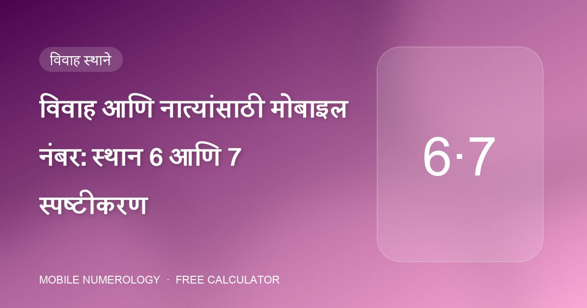
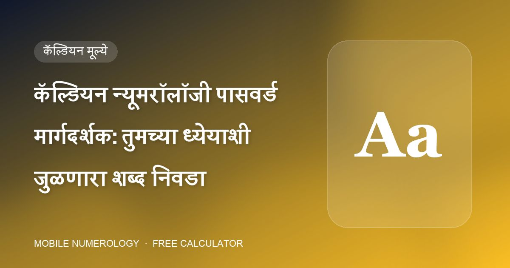
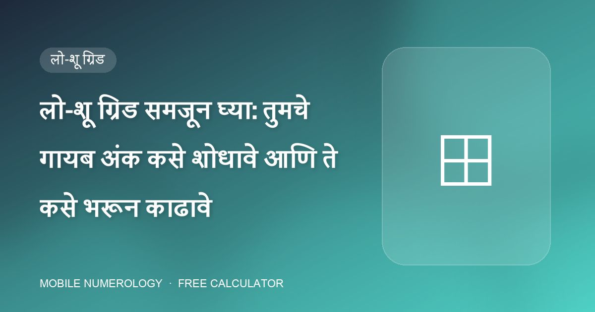
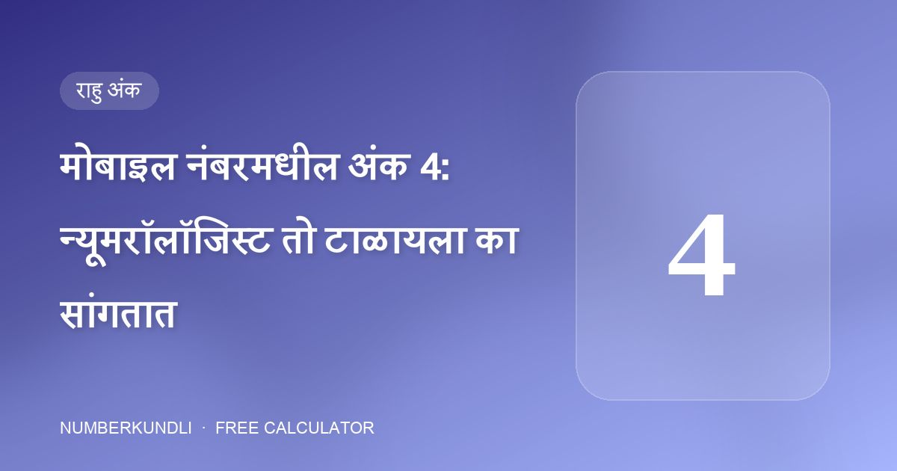

मोबाइल नंबर · खास
विवाह आणि नात्यांसाठी मोबाइल नंबर: स्थान 6 आणि 7 स्पष्टीकरण
तुमच्या फोन नंबरच्या मधले दोन अंक तुमचे प्रेमजीवन वर्णन करतात. त्यातला एक मदत करू शकतो; अनेक नुकसान करू शकतात.
NumberKundli15 सप्टेंबर 2026
मोबाइल न्यूमरॉलॉजीचे व्यावहारिक मार्गदर्शक: तुमच्या फोन नंबरचा प्रत्येक अंक कसा वाचावा, शुभ पिन व पासवर्ड कसा निवडावा, आणि जन्मतारखेनुसार वॉलपेपर, कव्हर व रंग कसे जुळवावे.

तुमच्या फोन नंबरच्या मधले दोन अंक तुमचे प्रेमजीवन वर्णन करतात. त्यातला एक मदत करू शकतो; अनेक नुकसान करू शकतात.

व्यावसायिक लाइनसाठी शेवटचे तीन अंक बहुतेक काम करतात. तिथे नेमके काय ठेवायचे — आणि काय बाहेर ठेवायचे ते इथे आहे.

मोबाइल न्यूमरॉलॉजीमधील प्रत्येक शिफारस एका प्रश्नाकडे परत येते: हा अंक तुमचा मित्र, शत्रू की तटस्थ?

प्रत्येक कॉल ही एक छोटी घटना आहे. अभ्यास प्रत्येक अंकाला दोन अफर्मेशन, एक रिंगटोन शैली आणि एक ग्रह मंत्र जोडतो, जेणेकरून सूर ठरतो.

शिस्तीसाठी काळा, अधिकारासाठी सोनेरी, व्यवसायासाठी हिरवा, अंतर्ज्ञानासाठी जांभळा — तुमच्या फोनचा रंग म्हणजे एका ग्रहाची रोजची मात्रा.

तुम्ही फोनच्या संरक्षणासाठी निवडलेले केस शांतपणे सांगते की तुम्ही स्वतःचे संरक्षण कसे करता. न्यूमरॉलॉजी नऊ कव्हर प्रकार मूलांकांशी जुळवते.

1 साठी उगवता सूर्य, 2 साठी पूर्ण चंद्र, 6 साठी लक्ष्मी, 9 साठी हनुमान — प्रत्येक अंकाला त्याच्या ग्रहाशी जुळणारी प्रतिमा आहे.

GANESHJI ची बेरीज 6. LAXMI ची बेरीज 5. कॅल्डियन न्यूमरॉलॉजीमध्ये पासवर्ड म्हणजे आत एक अंक असलेला शब्द — आणि तो अंक हेतुपुरस्सर निवडता येतो.

तुम्ही दिवसातून डझनभर वेळा फोनचा पिन टाइप करता. न्यूमरॉलॉजी त्याला एक छोटा दैनंदिन विधी मानते — म्हणून अंक जाणीवपूर्वक निवडा.

नऊ चौकोन, एक जन्मतारीख. लो-शू ग्रिड एका दृष्टिक्षेपात दाखवते की तुम्ही कोणत्या ऊर्जांसह जन्मलात — आणि कोणत्या जोडायच्या आहेत.

मोबाइल न्यूमरॉलॉजीमधील प्रत्येक शिफारस दोन अंकांवर चालते. दोन्ही तुमच्या जन्मतारखेतून येतात आणि एका मिनिटापेक्षा कमी वेळात निघतात.

पारंपरिक साहित्य एका अंकाबद्दल असामान्यपणे स्पष्ट आहे: "मोबाइल फोनमध्ये 4 अंक टाळा." कारण इथे आहे.

8 हा शनीचा अंक आहे: कर्म, कष्ट आणि विलंब. फोन नंबरच्या चुकीच्या स्थानी तो पैसा व नात्यांवर भार बनतो.

तुम्हाला तुमच्या फोन नंबरचे शेवटचे अंक निवडता आले, तर न्यूमरॉलॉजीची स्पष्ट पसंती आहे: 55 किंवा 555.

तुमचा मोबाइल नंबर केवळ अंकांची मालिका नाही. मोबाइल न्यूमरॉलॉजीमध्ये प्रत्येक स्थान — पहिल्या अंकापासून शेवटच्यापर्यंत — जीवनाच्या एका विशिष्ट क्षेत्रावर राज्य करते.